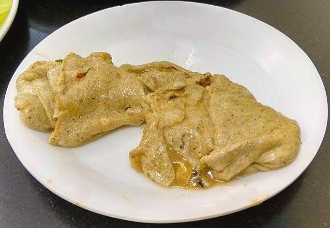

Contains: sesame, mustard
Checked against the ingredient list for ten allergens: milk, egg, fish, crustaceans, tree nuts, peanuts, sesame, mustard, soy and gluten. Brands vary, so read the label on anything new to you.
Ingredients
Quantities for 4.
- large lime-sized ball, soaked in 2 cups hot water Tamarind
- 15, peeled and left whole Shallotsambar onions; they stand in for the sun-dried vathal
- 5 tbsp Sesame Oilthe quantity is not a typo. This curry sits under a layer of oil
- 2.5 tbsp Sambar Powder
- 3, broken Dried Red Chilli
- 8 cloves, peeled and whole Garlicoptional
- 1 tsp Mustard Seeds
- 1/2 tsp Fenugreek Seedsthe signature bitterness; measure it exactly
- 1 tsp Chana Daloptional
- 2 sprigs Curry Leaves
- 1/2 tsp Asafoetidause compounded-free hing to keep this gluten-free
- 1/4 tsp Turmeric
- 2 tsp, grated Jaggeryrounds off the sourness
- 1 tsp, slaked in 2 tbsp water Rice Flouronly if it refuses to thickenoptional
- to taste Salt
Cookware
stovetop, kadhai
Before you start
- Soak the tamarind in hot water 20 minutes and strain out about 2 cups of extract.
- Peel the shallots and leave them whole. They should stay recognisable in the finished gravy.
- This curry needs a long slow reduction, so start it before the rice.
Method
- Heat the sesame oil in a kadhai and pop the mustard seeds.
- Add the fenugreek seeds and chana dal and fry 20 seconds until the fenugreek turns reddish.Fenugreek that goes dark brown makes the whole pot bitter, pull it early.
- Add the red chillies, curry leaves and hing and let them crackle.
- Add the whole shallots and garlic and fry 5 minutes until the shallots are browned in patches and glossy.
- Stir in the sambar powder and turmeric and fry 30 seconds in the oil.
- Pour in the tamarind extract with the salt and jaggery and bring to a simmer.
- Simmer uncovered on low heat for 20 to 25 minutes, stirring occasionally.
- It is done when the volume has dropped by a third and the sesame oil floats clear on top.That floating oil is the whole test. Until it appears, the tamarind still tastes raw.
- If it is still thin after 25 minutes, stir in the slaked rice flour and cook 2 minutes more.
- Rest 10 minutes off the heat and serve with rice, a spoon of sesame oil and a poriyal.
Storage
Keeps a week refrigerated and improves for the first three days. The oil seals it. Reheat gently; do not freeze.
Nutrition Medium estimate
Low protein: 2 g a serving, 3% of the calories
| Per serving36 g | Per 100 g | |
|---|---|---|
| Calories | 211 kcal | 586 kcal |
| Protein | 1.6 g | 4 g |
| Carbohydrate | 8.9 g | 25 g |
| of which sugars | 2.5 g | 7 g |
| Fibre | 2.7 g | 8 g |
| Fat | 19.7 g | 54 g |
| of which saturated | 2.8 g | 8 g |
| of which unsaturated | 15.9 g | 44 g |
Ingredients given to taste count as zero, so the real figures run a little higher. Nearest database match used for asafoetida, curry leaves, jaggery, sambar powder. Estimated from raw ingredients using USDA FoodData Central.
Times, yields, allergens and nutrition are guidance. Use your own judgement on doneness and on storing. More in About.